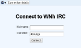
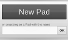
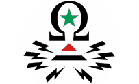
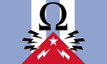
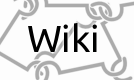
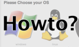

World NeighborHood
darknet / hacktivist toolset
Who are 'we'
'We' are people from all over the world, with the same idea about the Internet and what the Internet could do.
What are the purposes?
There are three main objectives: first, we want to build a real free network, without country specific restrictions or anything else. We would make everyone feel free so we build services which are only reachable from the darknet and that's why they're not supervised by anyone.
We also try to help people who are exposed to the censorship of their state. Which be punished if they speak their minds, because of their government suppresses freedom of speech.
The last objective is to build a toolchain for activists, ngo's or any other group which need tools to communicate or collaborate.
How to became part of it? / How to use it?
We're working on full tutorials here for all ways to connect to the WNh. If you know how to setup OpenVPN for your System, here is the Client config for the OpenVPN way to connect.
If you think our services aren't reliable or trustable, feel free to grow your own and to asks for help, we already have some documentation that could be usefull.
Get in touch with us
find us in our webchat here #dn - webchat
Contact us directly
-
Germany:
- Christian Neubauer
- neu3no (at) wnh (.) me (German/English)
- Twitter @neu3no
- Diani Barreto
- diani (at) wnh (.) me (Spanish)
- Twitter @deCespedes
-
France:
- KheOps
- ceops (at) wnh (.) me (French/English)
- Twitter @kheops2713
-
Tunesia:
- Agatha Perk
- agatha.perk (at) wnh (.) me (Arabic)
-
United States:
- Sam Covin
- mobeatie (at) mobeatie (.) com (English)
- Twitter @mobeatie
Term Of Services
- We do not guarante the availability of the services. It may or may not works at a given time.
- We do our best to enforce anonymity and security of the infrastructure. However, we do this on our free time, we do not pretending we are flawless.
- At no point a services will require you to register, pay, gives us any kind of data about you.
- At no point a services will log anything besides information needed for making the whle things works.
- We never ask for personal informations, you never need to enter your data to register for a service of us.
- Services inside the darknet stay into the darknet.
- Using the darknet to interact with the outternet may and will break things.
- None of the darknet users or operators can be held legally responsible for anything about the darknet
- We do not have a council where we votes decision. We do things and then keep the other in touch. We encourage you to do the same.
Privacy Policy
We do not log and register any kind of more or less personal data.
If you do not trust us, fine, use fakes data (we encourage you to provides fake datas anywhereyou can)
Services
Please be patient, more services will be available soon. The most services are only internal reachable.
HotSpot's
We also have custom firmware images for various routers and could build additional for routers which are currently unsupported (ask Christian Neubauer if you need to request an image for a special Hardware).
Also we could help to set up, Hotspots for you. The Idea is to have access points to the network for clients (like Smarphones) which are not able to connect via VPN, to provide netfreedom, security, anonymity and a less censored net also for this devices and guests.
Free VPN
There are many ways to connect, even if most VPN's are blocked in your net, just ask on Chat or one of the contacts on the first page for that or find a solution on on of the Wiki Pages.
Web
- WebChat of internal IRC
- search-engine based on seeks
- etherpad collaboration /https
- OpSyria Broadcast System
- OpCuba Broadcast System
- Background Info & Documentation
- OpenWRT Images for Wnh
- User HowTo Project
Others
- Anticensorship DNS:
- 79.140.52.29
- 2001:470:6c:1b3::2
- Internal IRC: irc.wnh / +6697 (ssl only)
- External IRC: irc.wnh.me / +6697 (ssl only)
- Hidden IRC: 3v7zch6pamxdtrrl.onion and deihlel4azkipayn.onion +6697 (ssl, for use with tor)
- Hidden Webchat: here and here (for use with tor)
- I2P IRC: guri5y24bivuv5vrjyzpiswesvsvblanyhpfp5dyxgxt5k27ratq.b32.i2p (for use with i2p)
- I2P Webchat here
- Jabber Bridge: wnh@conference.torservers.net,(Howto join jabber conference)
- Mumble Voicechat Server: talk.wnh.me on port 64738